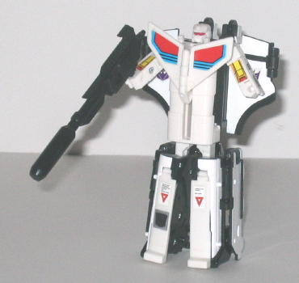
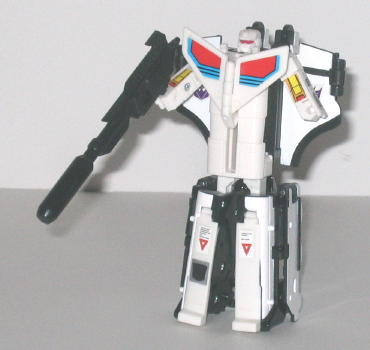

Astrotrain's safety testing and packaging had already been made up and done by the time Toys "R" Us cancelled the G1 Reissue line, so Hasbro didn't let all that production money go to waste-- instead, they released Astrotrain in limited quanties (around 2,000, I think) on their own online store, Hasbrotoyshop.com , for a price slightly less than TRU was charging (though still rather expensive, given the small size of the toy).
Astrotrain's shuttle
mode is the best of the toy's three modes, being nearly flawless in most
respects-- the proportions are very good for a triple changer, and the
color scheme varies enough between the white and the black and there's
enough stickers to make him look mildly interesting. (Another couple of
secondary colors couldn't hurt, though...) You may notice, however, that
G1 Astrotrain in the cartoon wasn't black-and-white, he was purple-and-black.
Well, Hasbro decided to release something here they thought (rightly) that
many G1 fans didn't have-- they released a previously Japanese-only color
scheme for Astrotrain. It's definitely more realistic in its colors than
the "real" G1 toy, but I still liked the purple-and-black better. There
are a few hints that he becomes a train, such as the train-wheel-shaped-panels
on the front half of the shuttle mode, and the rectangular bits that stick
out above the shuttle cockpit look a tad out of place, as well. Overall,
though, a very solid mode, considering his three modes.
Astrotrain's train mode
is the weaker of the two alt modes, though it's definitely a train in it's
own right-- it's nice to finally have a REAL triple changer toy again,
I'll tell you what. For a G1 toy, the train mode has a surprising amount
of mold detailing in it, with different pistons and everything molded in
there. The reason I say it's the weaker of the two modes is because most
of the wheels are just molded into the plastic panels that cover up the
shuttle parts, the only real wheels are on the front sides of the train
and near the rear, on the underside. There's also a few white pieces of
the shuttle poking through the panels here and there, and the wheels on
the TOP of the train and the rocket jets in the back also detract from
the real-ness of the train a bit. I also would have appreciated a bit more
paint detailing or at least some more applicable stickers in this mode,
as the train's almost entirely solid black.
Astrotrain's robot mode,
on the other hand,
is pretty laughable. His arms are so small and midgety
that they look absolutely ridiculous-- having no discernable elbows doesn't
help much, either. His large gun only suceeds in making his stubby arms
look even smaller. Plus, the chest-fins, though rather cool-looking, don't
really lock into place anywhere, so they tend to wiggle around a little
when you're fiddling with the figure. They also get in the way of Astrotrain
pointing his gun forward, what with his little arms and all. The legs don't
look that bad, if you ignore the fact that he has almost no upper legs--
however, this guy's almost a total brick, even for a G1 toy-- he has ball-joint
articulation at the shoulders, but that's the extent of his movement in
this mode. I do like his head design, though, and the long, rectangular
body makes him look like he'd be a pretty tall Transformer (ignoring his
scale with other figures, natch).
G1 Reissue Astrotrain
is a bonafied triple-changer, with two pretty good, unique alt modes. Unfortunately,
his robot mode royally stinks, and is just plain goofy-looking with its
little stubby arms. Add to this the $25+shipping price tag, and I'd only
recommend this figure if you are a G1 "olden days" fanatic or just REALLY
like triple changers, regardless of the quality of their robot modes.
Review by Beastbot